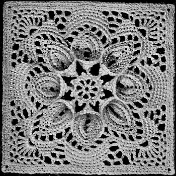

The Puritan Bedspread - Free Crochet Pattern MATERIALS: AMERICAN THREAD COMPANY The Famous "PURITAN" MERCERIZED CROCHET COTTON, Article 40 or "DE LUXE" Quality MERCERIZED CROCHET COTTON, Article 346 52 balls White, Cream or Ecru. Steel crochet hook No. 7. Each Motif measures about 5 inches. 216 Motifs ( 12 x 18 ) are required to make spread measuring about 62 inches x 92 inches without the 7 inch fringe. 1st Row: Ch 6, join to form a ring. 2nd Row: Ch 6, dc in ring, * ch 3, dc in same ring, repeat from * 5 times, ch 3, join in 3rd st of ch. 3rd Row: Ch 1, 2 sc in 1st mesh, ** ch 14, dc in 6th st from hook, * ch 2, skip 2 sts of ch, dc in next st, repeat from * once, ch 1, turn. 4th Row: 1 sc in dc, 2 sc in next mesh, 1 sc in next dc, 2 sc in next mesh, 1 sc in next dc, 1 sc in each of the next 2 sts of ch, 3 sc in next st of ch, 1 sc in each of the next 2 sts of ch, 1 sc in next dc, 2 sc in next mesh, 1 sc in next dc, 2 sc in next mesh, 1 sc in last dc, ch 1, turn. 5th Row: 1 sc in each of the next 10 sc picking up the back loop of sts only, 3 sc in next st, 1 sc in each of the next 10 sc, ch 1, turn. 6th Row: 1 sc in each of the next 11 sc picking up the back loop of sts only, 3 sc in next st, 1 sc in each of the next 11 sc, ** ch 1, turn. 7th Row: 1 sc in each of the next 12 sc picking up the back loop of sts only, 3 sc in next st, 1 sc in each of the next 12 sc. With right side of work toward you, sl loop off hook, fold the petal through the center lengthwise, insert hook in 1st st of 7th row, pick up loop and sl st across lower edge and the 2 remaining chs of stem, flatten out petal again, work 2 sc over remainder of 1st mesh, ch 5, sl st in 5th st from hook for picot, 2 sc in next mesh and repeat between ** of 3rd and 6th rows, ch 1, turn. 8th Row: 1 sc in each of the 1st 3 sc picking up back loop of sts only, slip loop off hook, insert hook in back loop of corresponding st of previous petal made and pull through loop to join, 1 sc in each of the next 3 sc, join to corresponding st of previous petal, 1 sc in each of the next 6 sc, 3 sc in next st, 1 sc in each of the next 12 sc, complete petal same as previous petal and continue until there are 8 petals joining the last petal to 1st petal made, cut thread. 9th Row: Join thread in point of petal, ch 6, dc in same space, * ch 2, skip 1 st, dc in next st, ch 2, skip 1 st, dc in next st, ch 2, skip 1 st, trc in next st, skip 1st free st on next petal, trc in next st, ch 2, skip 1 st, dc in next st, ch 2, skip 1 st, dc in next st, ch 2, skip 1 st, dc in point of petal, ch 3, dc in same space, repeat from * all around, ch 2, join in 3rd st of ch. 10th Row: Ch 1, * 3 sc in 1st mesh, 1 sc in next dc, 2 sc in next mesh, sc in next dc, 2 sc in next mesh, sc in next dc, 2 sc in next mesh, skip next 2 trc, 2 sc in each of the next 3 meshes, 1 sc in each of the next 3 dc, repeat from * all around. 11th Row: Ch 5, skip 3 sc, 1 sc in each of the next 7 sc, ch 3, skip 4 sc, 1 sc in each of the next 17 sc, ch 3, skip 4 sc, 1 sc in each of the next 7 sc, repeat from beginning all around. 12th Row: Sl st into loop, ch 6, trc in same loop, * ch 1, trc in same loop, repeat from * 4 times, ** ch 3, skip 1 sc, 1 sc in each of the next 5 sc, ch 4, skip 1 sc of next group of sc, 1 sc in each of the next 15 sc, ch 4, skip 1 sc of next group of sc, 1 sc in each of the next 5 sc, ch 3, 1 trc in next loop, * ch 1, trc in same loop, repeat from * 5 times, repeat from ** all around, ch 3, join in 5th st of ch. 13th Row: Sc in next loop, * ch 3, sc in next loop, repeat from * 5 times, ** ch 3, skip 1 sc, 1 sc in each of the next 3 sc, ch 3, dc in next loop, ch 3, skip 1 sc, 1 sc in each of the next 13 sc, ch 3, dc in next loop, ch 3, skip 1 sc, 1 sc in each of the next 3 sc, * ch 3, sc in next loop, repeat from * 7 times, repeat from ** all around completing the loops at corner. 14th Row: Sl st to next loop, ch 2, sc in next loop, ch 2, sc in next loop, ch 3, sc in same loop (this is the corner), * ch 2, sc in next loop, repeat from * 3 times, * ch 2, dc in next loop, repeat from * once, ch 2, skip 2 sc, 1 sc in each of the next 9 sc, * ch 2, dc in next loop, repeat from * once, * ch 2, sc in next loop, repeat from * 4 times, ch 3, sc in same loop, * ch 2, sc in next loop, repeat from * 3 times, continue around in same manner. 15th Row: Ch 1, 2 sc in each of the next 2 loops, 5 sc in corner loop, 2 sc in each of the next 4 loops, 3 sc in each of the next 3 loops, skip 1 sc, 1 sc in each of the next 7 sc, continue all around in same manner. 16th Row: Working in back loop of sts only, work 1 sc in each sc working 3 sc in each corner, cut thread. Work 215 more motifs in same manner. Sew motifs together. EDGE: Attach thread in corner and working across top, ch 4, dc in same space, * ch 1, skip 1 st, dc in next st, repeat from * all around working 1 dc, ch 1, 1 dc in center st at each corner, join. 2nd Row: * Ch 3, 2 dc in same space, skip one mesh, sl st in next mesh, ch 3, 2 dc in same space, skip 1 dc and 1 mesh, sl st in next dc, repeat from * across top edge only, cut thread. FRINGE: Wind thread over a 7 inch cardboard. Cut one end. Using 14 strands, double in half and loop through every other mesh on the 3 sides. * Take half of one group of fringe and half of next group of fringe, knot together about 1/2 inch from 1st row of knots, repeat from * all around. Trim fringe evenly.  HOME |